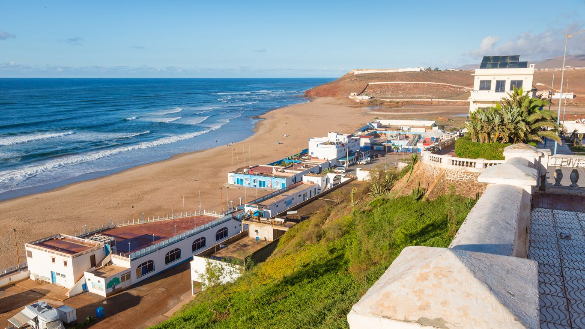
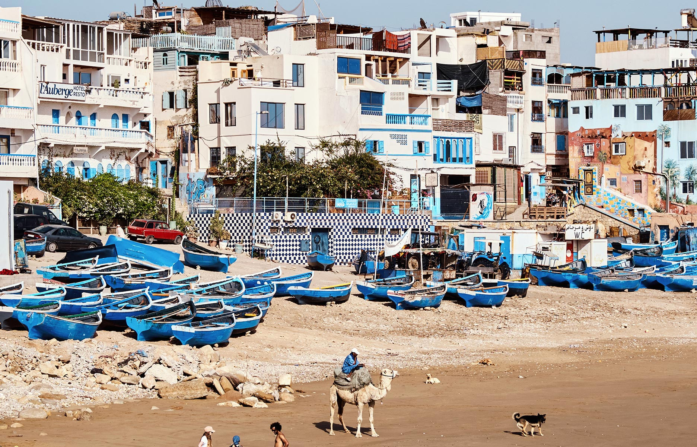
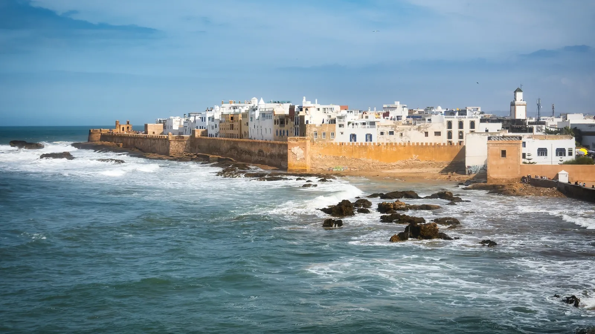

— I —
Les voyageurs
Groupe 1 — Quatre
Sandrine · Malik
Philippe · Florence
Philippe · Florence
Retour mercredi 11 novembre
Groupe 2 — Deux
Muriel
Jean-Michel
Jean-Michel
Retour samedi 14 novembre
— II —
L'itineraire
Boucle cotiere de ~715 km, du sud sauvage aux remparts d'Essaouira
| — | Etape | Nuits | Dates | Route |
|---|---|---|---|---|
| I | Sidi Ifnile sud sauvage | 2 | 31/10 → 02/11 | Agadir → 165 km |
| II | Taghazoutsurf & farniente | 2 | 02/11 → 04/11 | 200 km via Legzira |
| III | Essaouirala perle blanche et bleue | 2 | 04/11 → 06/11 | 175 km cote |
| IV | Agadirdetente & retour | 5 + 3 | 06/11 → 11 ou 14/11 | 175 km |
I
Sidi Ifni
le sud sauvage
2 nuits31/10 → 02/11165 km
II
Taghazout
surf & farniente
2 nuits02/11 → 04/11200 km
III
Essaouira
la perle blanche et bleue
2 nuits04/11 → 06/11175 km
IV
Agadir
detente & retour
5+3 nuits06/11 → 14/11175 km
— III —
Les quatre etapes

Etape I
Sidi Ifni
l'inattendu
31 octobre → 02 novembre · 2 nuits
Hebergement choisi
Boutique-hotel art deco face ocean. Jardin avec tortues, petit-dejeuner maison, chambres vue mer. 4,7/5 — 88 avis.
A ne pas manquer
- Plage de Legzira — falaises ocre, arches naturelles
- Architecture art deco bleu & blanc (ex-enclave espagnole)
- Mirleft — village hippie/surf, criques sauvages
- Sortie peche depuis le port avec un local
- Souk hebdomadaire du dimanche
- Poisson grille en terrasse face ocean

Etape II
Taghazout
chill & surf
02 → 04 novembre · 2 nuits
A ne pas manquer
- Paradise Valley — canyon, piscines naturelles dans les palmiers
- Cours de surf collectif debutants (~250 dh / pers la demi-journee)
- Anchor Point — spot mythique du surf marocain
- Imsouane — plus longue droite d'Afrique, sardines au port
- Yoga, hammam, couchers de soleil au World of Waves

Etape III
Essaouira
carte postale
04 → 06 novembre · 2 nuits
A ne pas manquer
- Skala de la Ville — remparts, canons, sunset (Game of Thrones)
- Port bleu — poisson grille sur les etals
- Lou's Rides — excursion 3 vallees en e-bike (4,9)
- Plage Sidi Kaouki — balade a cheval ou chameau
- Cours de cuisine marocaine chez l'habitant
- Musique gnaoua en soiree

Etape IV
Agadir
retour & detente
06 → 11 ou 14 novembre · 5 + 3 nuits
Hebergement choisi
Connu et apprecie. Pieds dans le sable, grandes terrasses vue mer, all-inclusive, animation soir, bar de plage. 4,4/5 — 8 206 avis.
A ne pas manquer
- Souk El Had — plus grand souk d'Afrique du Nord (ferme lundi)
- Kasbah Oufella en telepherique — vue sur la baie
- Marina + corniche, restaurants en bord de mer
- Detente all-inclusive + plage
- Pour Muriel & JM : journee Marrakech (3h) ou Taroudant (1h)
— IV —
Budget estimatif
| Poste | Detail | Par pers. |
|---|---|---|
| Vols A/R | Ryanair Marseille ↔ Agadir | 240 € |
| Hebergements | 11 nuits (mix hotel/appart) | ~450 € |
| Transport | Location voiture ou minibus partage | ~120 € |
| Repas | ~25 €/jour x 11 jours | ~275 € |
| Activites | Surf, excursions, hammam, e-bike | ~150 € |
| Total estime | ~1 235 € | |
Estimation haute pour 11 jours. Le Maroc est tres abordable — compter 200-300 dh (~20-30 €) par jour pour manger bien.
— V —
Infos pratiques
Devise
Dirham marocain (MAD)
1 € ≈ 10,8 MAD
Retrait DAB sur place
Decalage horaire
UTC+1 (meme heure qu'en France en hiver)
Meteo novembre
Agadir : 22-26°C
Essaouira : 18-22°C
Eau : 19-21°C
Electricite
Prises type C/E (comme en France)
Pas besoin d'adaptateur
Telephone
SIM locale ~30 dh (3 €) avec data
ou roaming EU non inclus
Urgences
Police : 19
SAMU : 15
Consulat FR Agadir :
+212 5 28 29 91 50
Pourboires
Resto : 10-15 dh
Guide : 50-100 dh
Taxi : arrondir
Eau
Boire uniquement eau en bouteille. Eviter glacons et crudites lavees a l'eau du robinet.
— VI —
Quoi emporter
Vetements
- T-shirts legers
- Short / pantalon lin
- Polaire ou sweat (soirees fraiches)
- Coupe-vent (Essaouira ventee)
- Maillot de bain x2
- Casquette / chapeau
Plage & activites
- Serviette microfibre
- Creme solaire SPF50
- Lunettes de soleil
- Chaussures de rando legeres
- Sandales
- Masque & tuba
Pratique
- Passeport (valide 6 mois)
- Photocopie passeport
- Carte bleue (sans frais)
- Cash euros (a changer)
- Trousse pharmacie basique
- Anti-diarrheique
Tech
- Chargeur + batterie externe
- Adaptateur (pas necessaire)
- Appareil photo / GoPro
- Ecouteurs
— VII —
Reste a arbitrer
- Choix de l'hebergement a Taghazout — parmi les 3 options
- Choix de l'hebergement a Essaouira — parmi les 3 options
- Transport sur place — minibus, deux locations, ou grand SUV ?
- Billets d'avion — reservation Ryanair a finaliser
- Reserver Logis La Marine (Sidi Ifni) — dispo limitee
- Reserver Amadil Ocean Club (Agadir) — balcon vue mer
- Recap a diffuser au groupe